Tras el descubrimiento de Urano, se observó que las órbitas de Urano, Saturno y Júpiter no se comportaban tal como predecían las leyes de Kepler y de Newton. Adams y Le Verrier, de forma independiente, calcularon la posición de un hipotético planeta, Neptuno, que finalmente fue encontrado por Galle, el 23 de septiembre de 1846, a menos de un grado de la posición calculada por Le Verrier. Más tarde se advirtió que Galileo ya había observado Neptuno en 1612, pero lo había confundido con una estrella.
Algunos Datos
Gravedad: 11.15 m/s²
Duración del día: 0d 16h 6m
Radio: 24,622 km
Período orbital: 165 años
Superficie: 7.618 miles de millones km²
Lunas: 14
Distancia con el sol: 4 300 000 000 km
Distancia con la tierra: 4.306 billones de km
 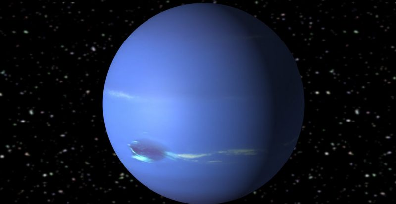
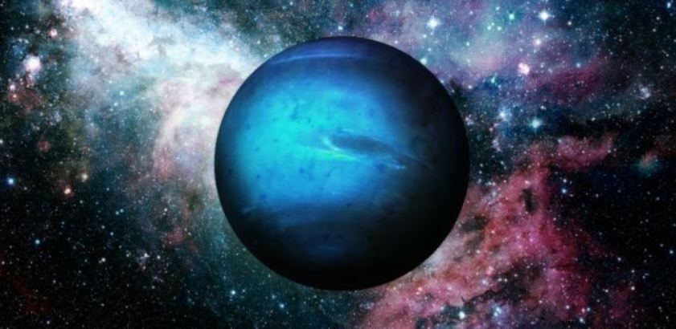
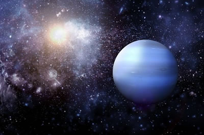
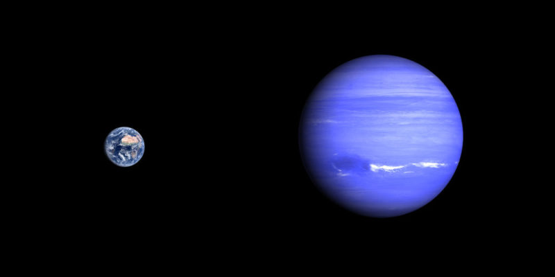
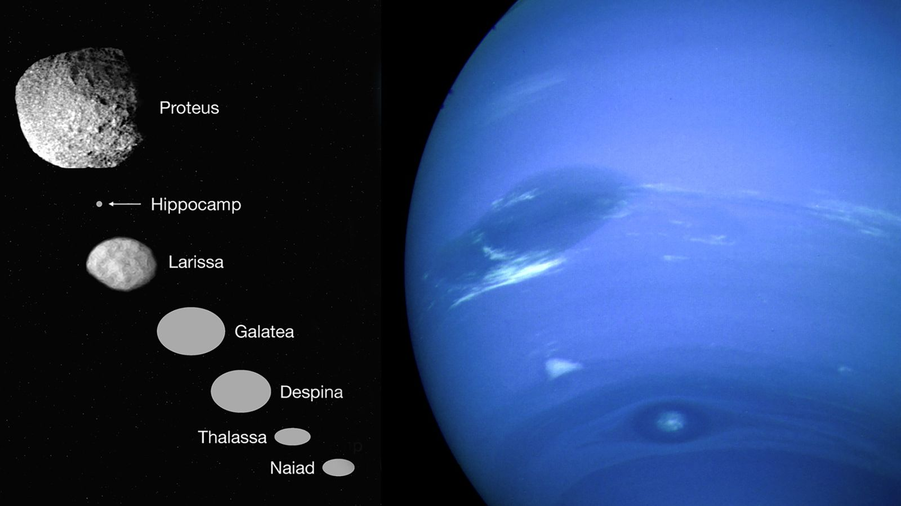
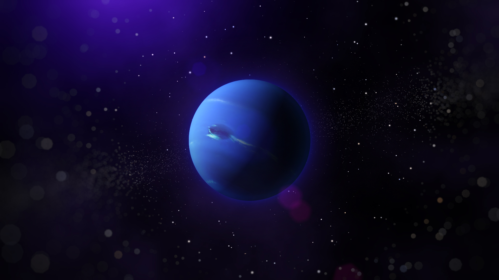
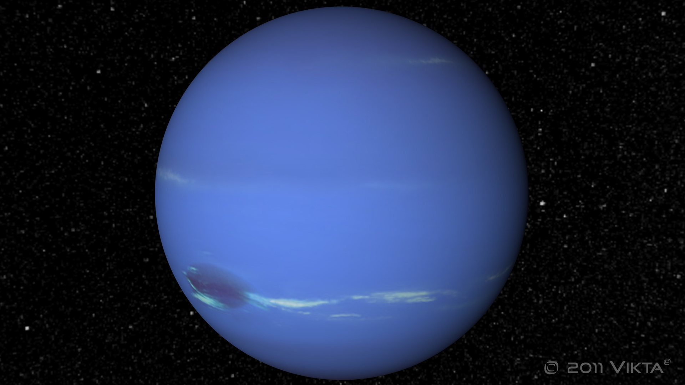
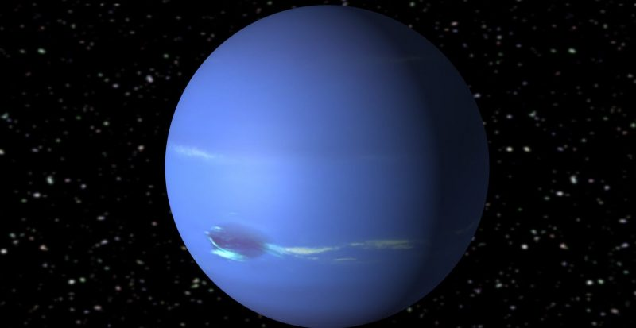
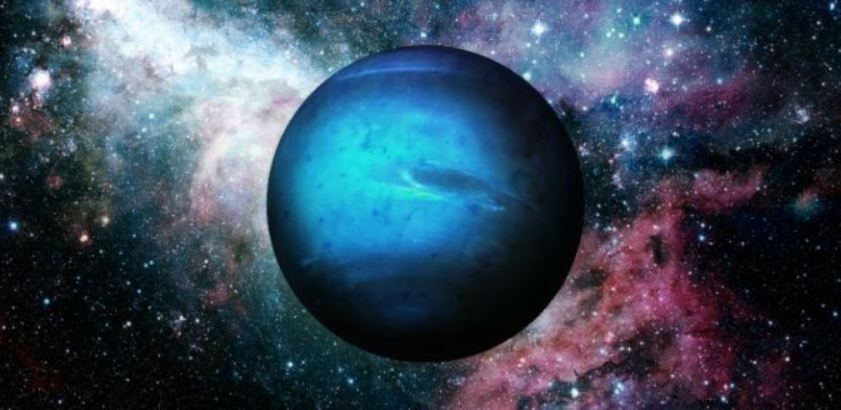
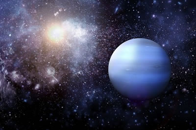
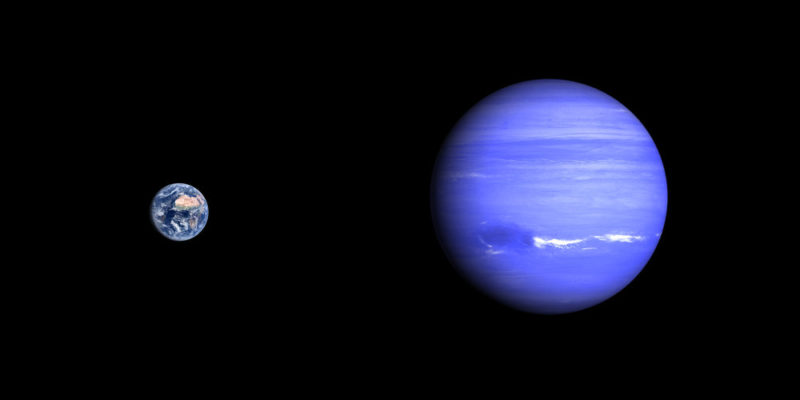
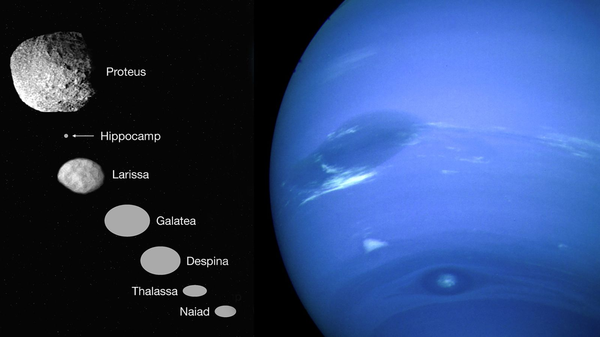
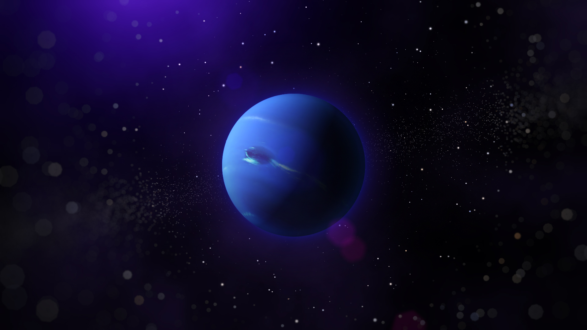
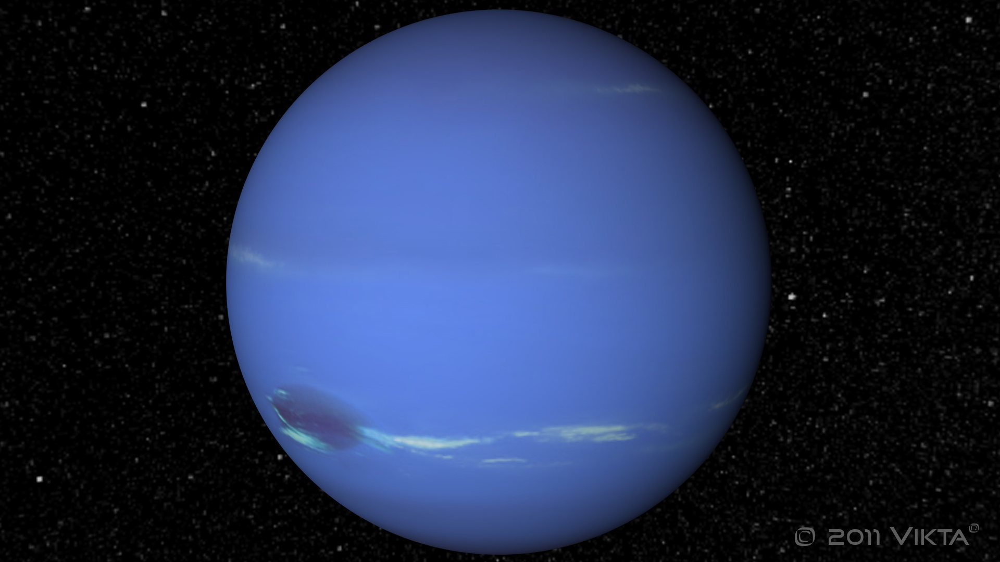